1
Who We Are
We bring together printing machinery, publishing equipment, official publications, historical documents, photographs, stories and oral histories to interpret how printed information helped shape Uganda.
Discover Uganda's printing and publishing journey — from missionary presses and the Government Printer to modern security printing, publishing, digital archives and the future of public information.
“The printing press is the greatest weapon in the armoury of the modern architect, and we must use it to build a nation.”— Inspired by Uganda's Publishing Pioneers
The Uganda Printing & Publishing Museum is a proposed heritage, learning and research space dedicated to preserving Uganda's printing and publishing story and making that history accessible to the public.
We bring together printing machinery, publishing equipment, official publications, historical documents, photographs, stories and oral histories to interpret how printed information helped shape Uganda.
A premier national heritage center showcasing Uganda’s rich printing and publishing history, inspiring learning, innovation, and cultural pride, and contributing to Uganda’s tourism growth.
To preserve, document, and exhibit the history and evolution of printing and publishing in Uganda, providing an engaging cultural and educational experience that attracts local and international visitors, supports heritage tourism, and promotes national identity.
A national printing museum can preserve objects that are rapidly disappearing while giving students, researchers, professionals and the public a place to understand how information has been produced and shared.
Safeguard historic presses, typesetting systems, cameras, type, tools and finishing equipment before they are lost or dismantled.
Document gazettes, books, newspapers, manuscripts, stationery, photographs and other printed evidence of national life.
Use demonstrations, workshops, exhibitions and digital resources to connect young people with print, media and information literacy.
Explore the proposed collection structure, including printing machines, publishing equipment, historical documents, official gazettes and printing materials.

Historic letterpress machinery representing the industrial era of commercial and document printing.
View Details →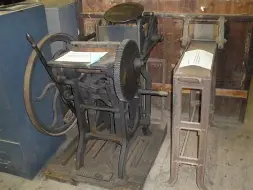
Early printing machinery associated with small print shops, educational publishing and heritage demonstrations.
View Details →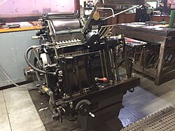
A treadle press representing mid-20th-century print-shop technology and hands-on production.
View Details →Books, manuscripts and documentary material connected to Uganda's early literacy, education and publishing history.
View Details →Official publications containing public notices, legal notices, proclamations, appointments, bills and other government information.
View Details →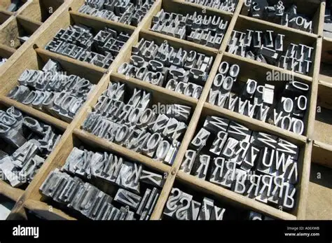
Metal type, letter blocks, slugs, composing tools, paper, inks and other materials used in the printing process.
View Details →about machines
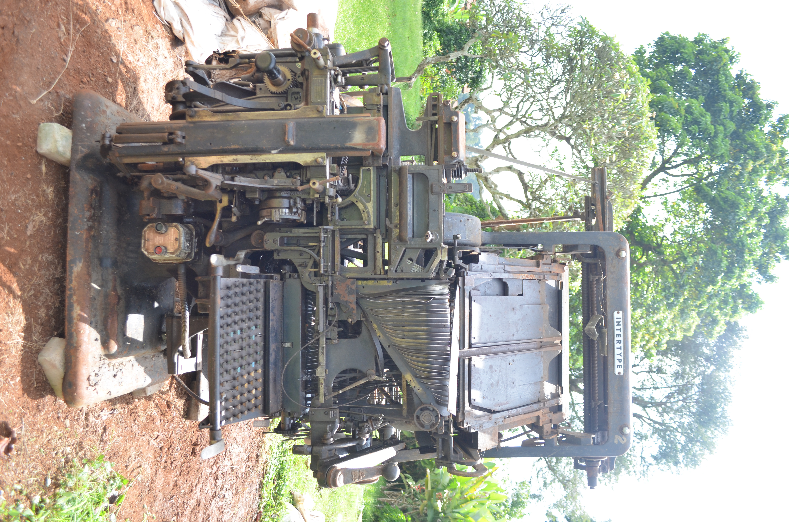
was mostly used during the budgeting period because of its speed.
manufactured between 1912 and 1976
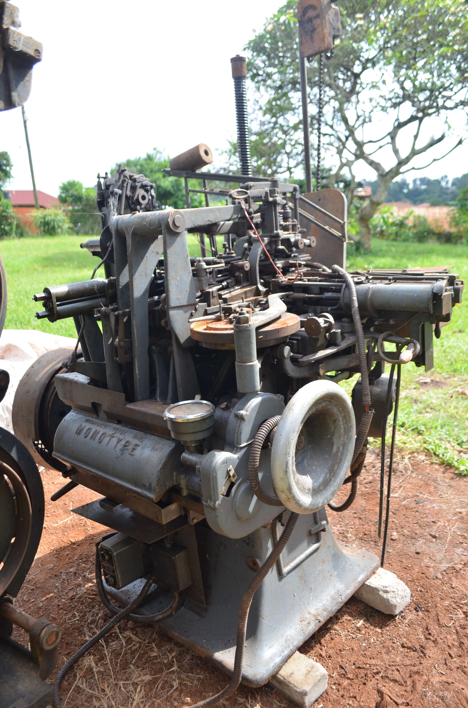
Was used mostly in printing of books.
The first Monotype typesetting machine was invented by American engineer Tolbert Lanston, who patented his initial mechanical typesetting device in 1887. The commercial hot-metal system, featuring the keyboard and the casting machine, was brought to market in 1900
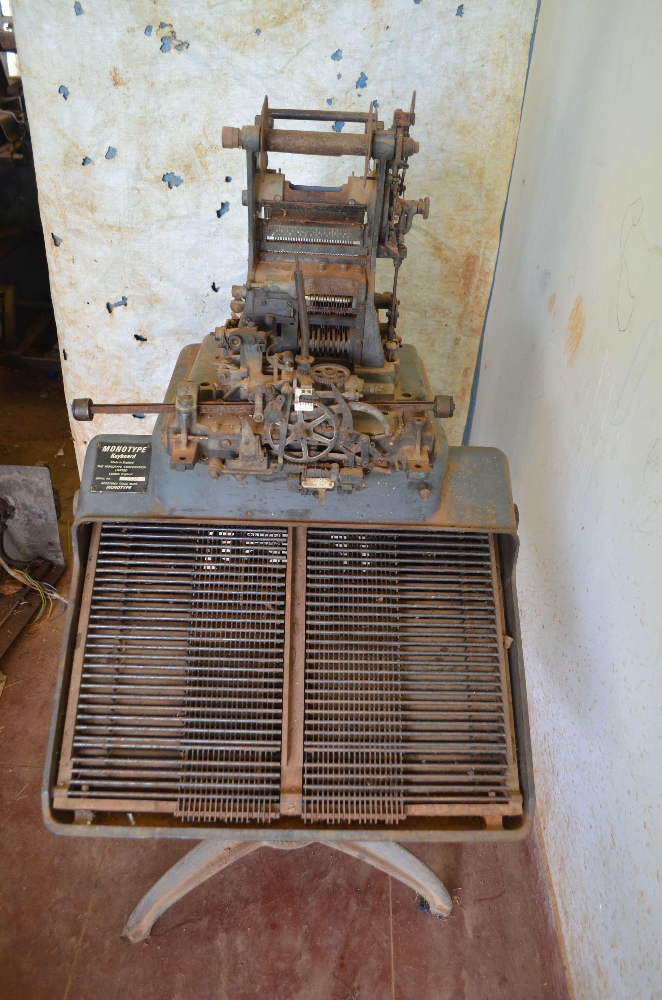
Was mostly used during finance bill which had lots of figures.
Between 1900 and the late 1960s. Tolbert Lanston’s Monotype system—consisting of a perforated paper-tape Keyboard and an automatic hot-metal Caster—was first brought to commercial market in 1900. Production of these machines steadily continued until the last Caster was manufactured in Surrey, England, in 1989
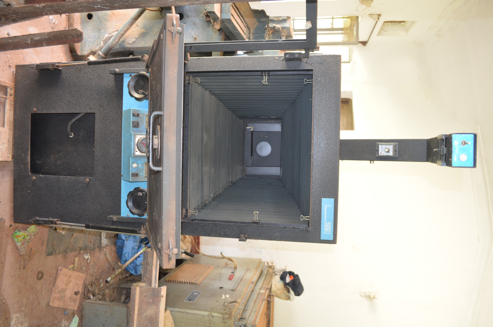
Was majorly used for image transfer and processing.
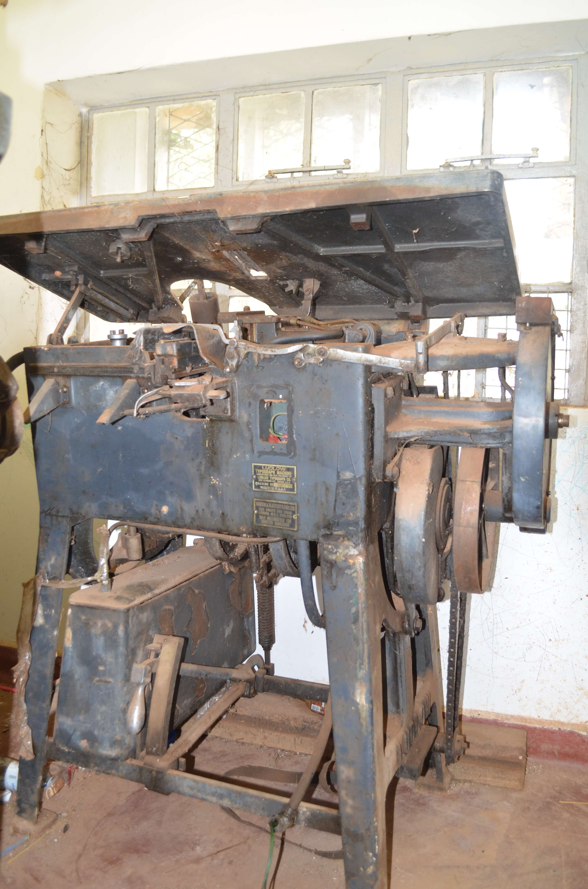
It was designed to type big letters suitable for posters, letterheads, IDs etc
The Ludlow Typograph was manufactured starting in 1912. First developed commercially in 1911, the hot metal typesetting machine was invented by William I. Ludlow and William A. Reade. Commercial production began in Chicago, and the machine found its way into printing plants around 1913 to 1914
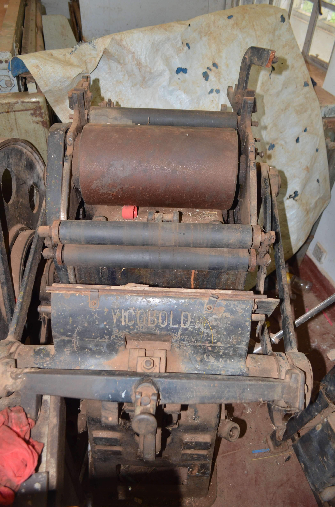
It was used to for relief printing, embossing, debossing, and foil stamping.
Was manufactured from the mid-1920s through the 1950s. The presses were originally designed and built in Germany by Rockstroh-Werke AG around 1925, and were later manufactured under license in the UK by Frank F. Pershke
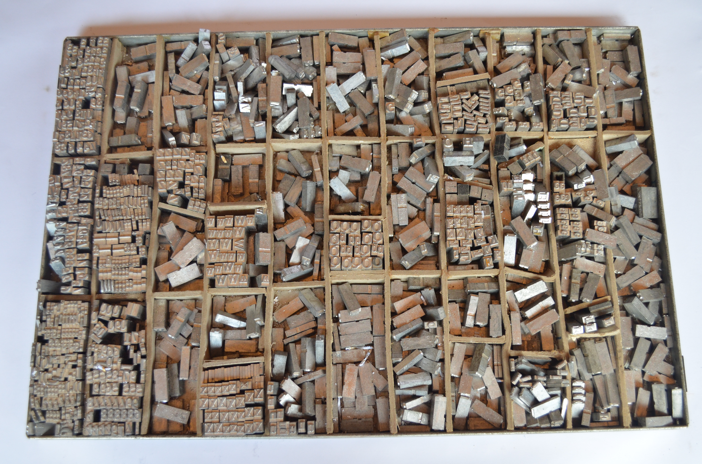
LETTER BLOCKS: they are majorly into two types i.e single block and the Slag which are casted by the monotype machine and intertype machine respectively.
NB. The use of these machines at UPPC is estimated to be from 1920s
Printing introduced mainly for administrative purposes.
Colonial Foundations (1894–1962)Establishment of the Government Printer, later formalized as the Uganda Printing and Publishing Corporation (UPPC). It became the official printer for government gazettes, laws, and notices.
Colonial FoundationsMissionary presses (Protestant and Catholic) produced religious texts, educational materials, and early vernacular publications.
Colonial FoundationsHydroelectric power at Owen Falls Dam boosted industrial capacity, including printing.
Colonial FoundationsUganda gains independence; UPPC continues as the official government printer.
Independence & Institutional Growth (1962–1980s)Expansion of educational publishing, newspapers, and political materials.
Independence & Institutional GrowthIdi Amin’s regime relied heavily on UPPC for official decrees and propaganda.
Independence & Institutional GrowthGrowth of private printing firms, especially on Nasser Road in Kampala, which became Uganda’s printing hub.
Liberalization & Private Sector Expansion (1980s–2000s)UPPC Act reaffirmed UPPC as the official government printer, responsible for sensitive documents (ballot papers, exams, permits).
Liberalization & Private Sector ExpansionIntroduction of modern offset presses and limited digital printing.
Liberalization & Private Sector ExpansionRise of digital publishing, photocopy bureaus, and small-scale presses serving education, NGOs, and SMEs.
Modern Era (2000s–Present)UPPC struggles with funding and outdated equipment but begins rebranding and modernization efforts.
Modern EraA visual record can show the machines, people, processes, publications and spaces behind Uganda's print heritage.
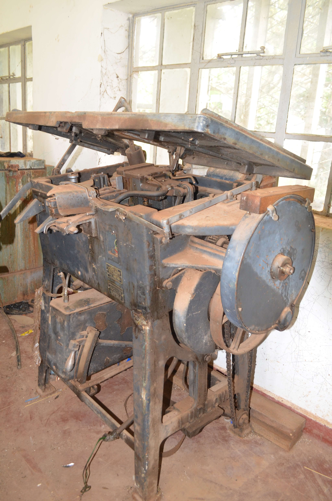
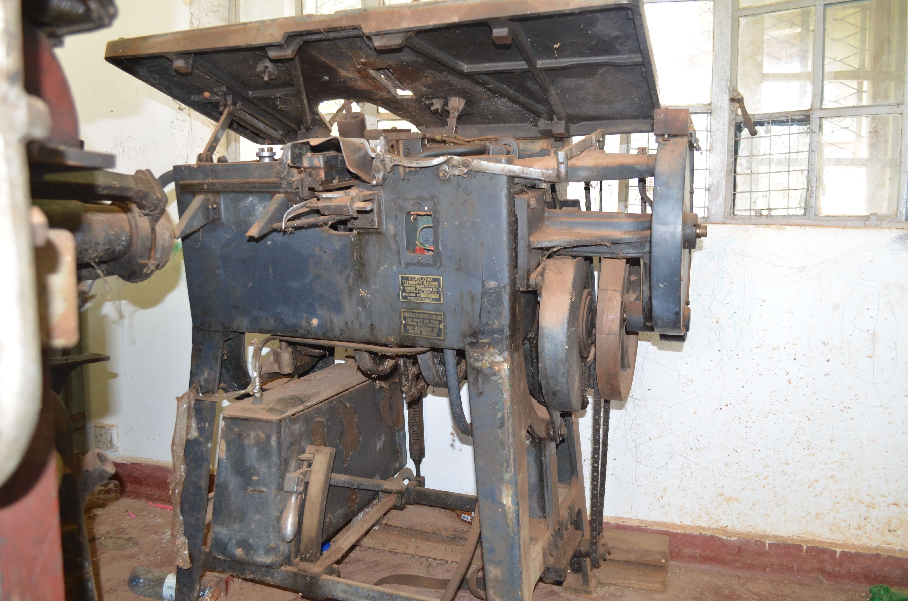
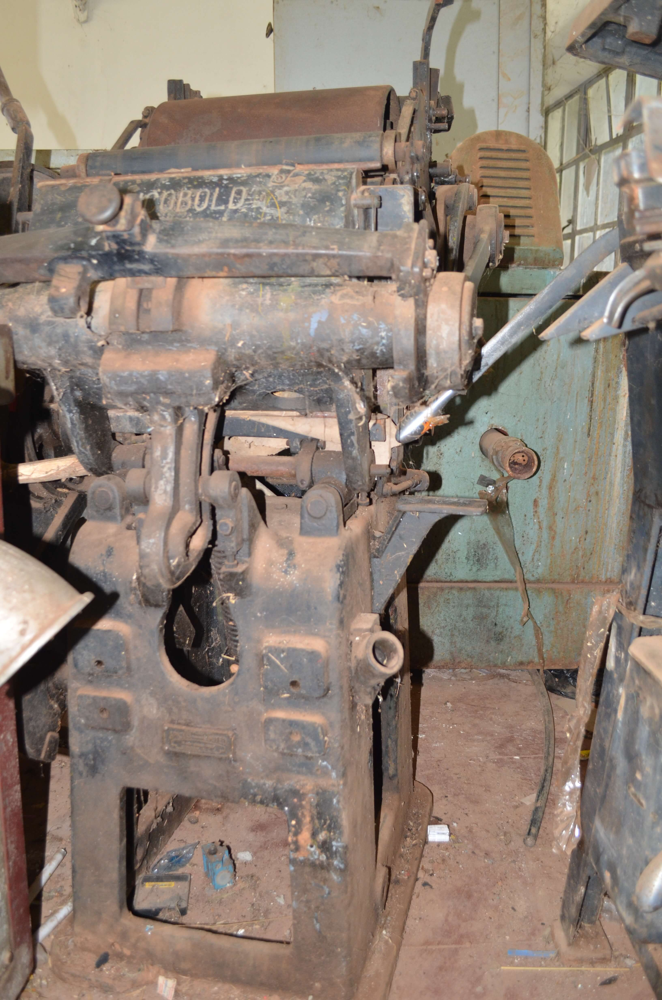
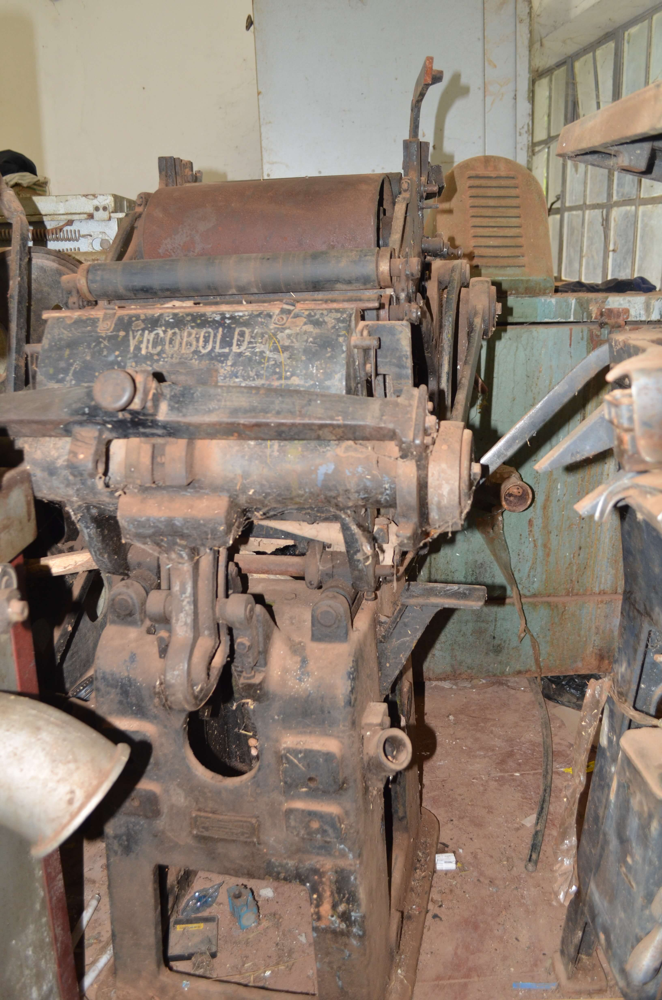
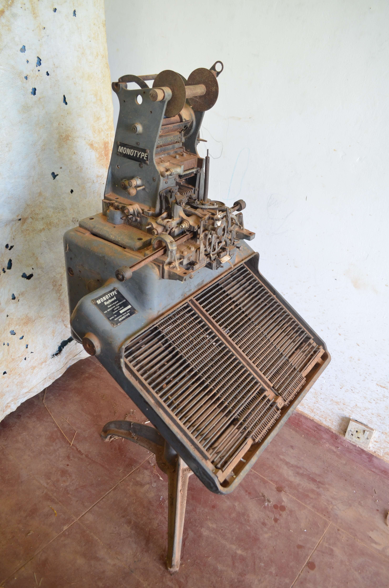
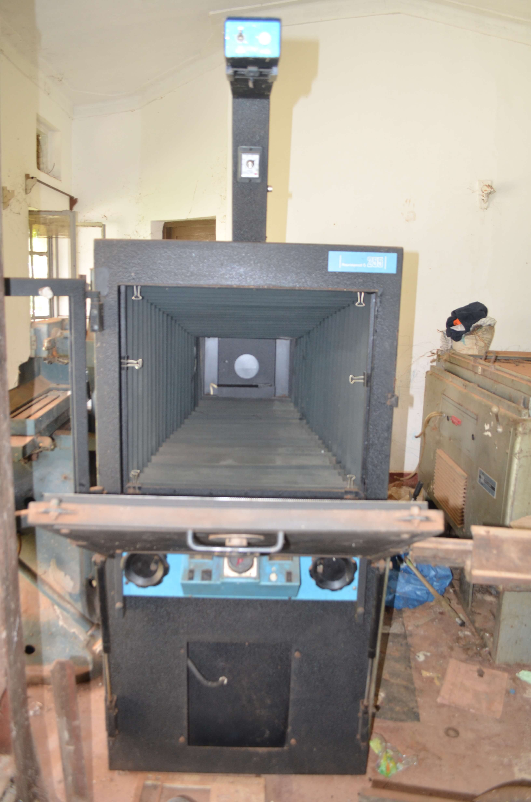
Six immersive zones trace the evolution of printing, publishing, journalism and public information in Uganda.
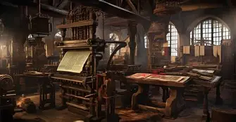
Early presses, literacy, local-language printing, primers, hymnals and the people who learned to set type.
Origins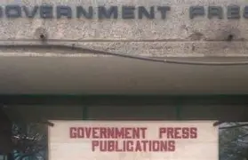
Government documents, official forms, printing machinery and the institutional history leading to UPPC.
1902–1962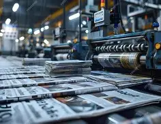
Newspapers, pamphlets, political communication and the role of print in national consciousness.
NationalismPrinted information, state publishing and the changing media environment after independence.
1962–1986
Newspapers, private publishing, photography, desktop publishing and new production technologies.
1986–2010Digital presses, e-publishing, online gazettes, social media and the future of publishing.
2010–TodayHands-on programmes for schools, universities, researchers, professional printers and the public.
Introduce learners to paper, type, composition, printing and finishing through guided demonstrations.
Support students and researchers working with newspapers, gazettes, books, oral history and material culture.
Heritage printing, bookbinding, conservation and practical knowledge-sharing with experienced practitioners.
Public talks and demonstrations that explain how machines, type and publishing systems transformed communication.
.
Managing Director
Uganda Printing & Publishing CorporationSenior
Uganda Printing & Publishing CorporationSpecial Projects
Uganda Printing & Publishing CorporationSpecial Projects
Uganda Printing & Publishing CorporationUse this area for museum openings, school days, machine demonstrations, talks, research seminars, temporary exhibitions and heritage celebrations.
Live demonstrations of historical typesetting, printing and finishing techniques.
A research-focused session on official publishing, legal notices and access to public information.
Practical activities introducing learners to type, layout, paper and the history of communication.
Schools, universities, professional bodies, publishers, printers and cultural institutions can propose talks, exhibitions, workshops and collaborative projects.
Publish museum announcements, collection acquisitions, restoration projects, exhibition launches, partnerships, research findings and event notices here.
Develop partnerships with institutions that can contribute collections, expertise, research and public programmes.
Digitisation can extend access to vulnerable documents while creating new opportunities for research and education.
Record the history, function and human stories of historic printing equipment before specialist knowledge disappears.
Messages submitted here open your email application and are addressed to the official UPPC contact email.